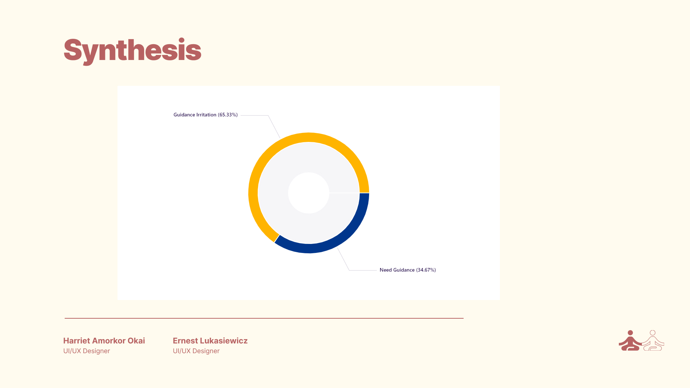

HCMS for Web/Mobile

No 1 Background
The client, a non-profit organization dedicated to reforestation efforts, approached me to revamp the user interface (UI) of their tree planting management app. They wanted a more user-friendly and efficient design to help volunteers and staff manage tree planting initiatives.
No 2 Challenges
- Complex Navigation: The existing app had a convoluted menu system, making it difficult for users to find essential features and information.
- Limited Mobile Experience: The app was primarily designed for desktop use, and there was a growing need for a mobile-friendly version to support fieldwork.
- Engagement: The client wanted to boost engagement among volunteers and increase the app's usability for coordinating tree planting events.
No 3 Approach
- App Analysis: I conducted a comprehensive analysis of the current app, identifying pain points and areas where the user experience could be enhanced. Below are some findings


No 4 Client Collaboration
I engaged in discussions with the client's team to understand their goals and challenges in managing tree planting initiatives and volunteer coordination.
No 5 Iterative Refinement
I collaborated closely with the client, incorporating their feedback and making iterative adjustments to the design to align it with their organization's mission and user experience goals.
No 6 Wireframes
I created a simple, low fidelity visual representation of the user interface. These wireframes served as the foundational blueprint for the final design and provided a clear framework for the layout, structure and functionality of the platform
No 7 Implementation
Once the client approved the final design, I worked closely with their development team to implement the new user interfaces unto both web and mobile platforms

No 8 Visual Changes
After successfully conducting our research interviews, we created a survey which was distributed to our target users (remote/hybrid workers). This survey was made up of closed and open ended questions. The purpose of the survey was to help us get quantitative and qualitative insights about users. Below are some of the insights we gathered from our target users..

No 9 Usability Tests
We conducted moderated and unmoderated usability tests to help us identify problems and potential improvements to check if users understand the navigation, observe how easily and quickly people accomplish tasks with Smiling Mind. Users undertook a total of four (4) tasks based on scenarios presented them. Below are some of the results of unmoderated tests.

No 10 Results Synthesis
After collecting data from our respondents, we had to breakdown the information to generate actionable insights. This was achieved using Dovetail, a tool for capturing customer feedback and user research in one place. It acts as user research repository for centralising interview notes and storing video and images, with tagging and annotations to help with analysis.

From analysis of data gathered from users, we deduced that 65.33% were irritated by the voices of coaches on the meditation app and hence would drop off without completing a session. Whereas 34.67% preferred to be guided through out a session. This would mean that smiling mind would have to include the ability of their users to opt for coaches for a session or develop a different type of meditation where the user would not require a coach.
It was also deduced as seen from above that 18.51% of our respondents tried meditation in order to have clarity of mind to carry out their basic activities and duties. To help users achieve that, meditation sessions should be tailored towards enabling users to achieve clarity whenever they decide to join a session on the App.
No 11 Research Report
After the information was synthesized, we pulled all of our relevant findings together in a digestible, easy to read format, with conclusions and recommendations. The aim is to make it easy for all stakeholders to have a quick read and understand the insights from this research so that important discussions and decisions can be made.
No 12 Lessons Learned
One very difficult part during this case study was accepting that we were not the users. During the moderated usability tests, we thought everything was extremely clear and basic and we were tempted to help out users to complete the tasks stated in each scenario. It made me realise that UX professionals must be able to get out of their own heads, interact with a cross-section of users, empathize with them, and apply what they’ve shared to the product development process.
Another important lesson learnt is to always have a research plan. Having a research plan really helped to make use of time and resources efficiently, decide what is to be done and why it should be done and it helped to focus on one thing at a time.